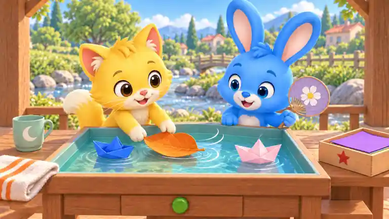
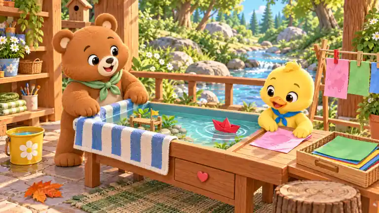
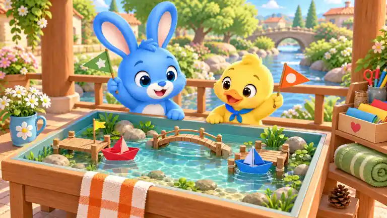

内置image_gen生成；按整体画面复杂度人工复核：低037/040，中035/038，高036/039。768×432、WebP质量30预览。源图未接入游戏；B展示全部候选，不等于运行时同时出现十处。
双角色与多个道具围绕单一水盘；较丰富背景，主区域清晰。

红船变蓝；米白船变粉；绿叶变橙；绿扇变紫；杯花变月；毛巾蓝纹变橙；橙纸变紫；盒心变星；松果移除；蓝钮变绿
工作台、晾纸架、货架、织物纹理及溪景，多层道具分布。

熊绿围巾变紫；鸭蓝围巾变橙；毛巾蓝纹变绿；鸭手下粉纸变黄；红船变紫；桶花变月；篮绿纸变橙；红夹变蓝；抽屉心变星；橙叶变绿
单角色、大片天空、少量分离道具，远景简化。
蓝袜口变紫；红星变心；橙袜口变绿；绿圆点变菱形；红船变粉；黄旗变蓝；盘鱼变月；毛巾浅蓝纹变橙；瓶心变花；橙叶变绿
双角色、水盘码头、两侧道具，背景适中而非空白。
黄船变粉；红旗变蓝；石星变心；桶蓝带变绿；橙叶变绿；绿纸变紫；盒心变月；紫夹变橙；绿尾饰变粉；蓝钮变绿
双码头、小桥、水草、货架和繁茂溪景，多层视觉信息。

兔旗星变心；鸭旗圆变菱形；红船变紫；蓝船变粉；鸭蓝巾变绿；小黄旗变红；杯花变月；绿卷巾变紫；盒心变星；松果移除
注意：松果移除带动架板重绘，接入时排除或局部修复。
主角与推车单一物件组，大块天空地面留白，背景简化。
红船变紫；黄旗变绿；坐垫星变月；白滚边变橙；盒心变花；左蓝轮心变绿；右黄轮心变橙；车把握柄变紫；猫粉尾饰变蓝；绿叶变橙